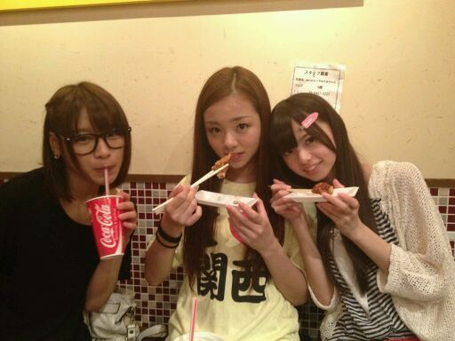

皆様こんにちわ,
Rotty★です。
まちにまった
握手会きた☆
ほんと 嬉しい気持ちっ*^^*
明日は名古屋
明後日は大阪 ですねっ♪
そして、レーンは
・まひろ
・あすか
・かずみ
・ひめか
の四人です (・ω・)
あすかは アイスが大好きなので
アイスの話したら
喜ぶかも*^^*
そして かずみんは...
『今Flipper's Guitarって
いうちょっと昔の歌手に
はまっとるよ！！
好きなものはガッシュ！』
だって(・∀・)!!
そして、ひめかは
お人形さんになりたい♪・ω・
って最近いっとる。
目がまんまるしておるから
もう お人形さんみたいだよ*^ω^*
今月いっぱい
まひろ
ひめか
あみ
三人協力しあって
体重おとそう*・ω・*!
って約束してます♪
あと ライブも
ギャンギャン☆と
盛り上がってくださいねっ^∀^!!
まひろも ギャンギャン
楽しむからさっ・∀・!!
あれだよっ!!
名古屋大阪にこれない皆様にも
気持ち届けるきでやりますっ(・ω・)>
あっ、ソーダ。
質問であったんだけど
前回の写真のまひろの
Tシャツに書いてる文字は
『岸和田』ですっ^ω^!!
誕生日の日
『岸和田』
『I love 関西』
とか そんな言葉が
一面に印刷されてる
Tシャツが届いて
見たら ままさんからやった☆
...

このTシャツきて、
大阪...難波とか梅田とか
お散歩しました。
ちょっと .. いや
だいぶ 目立ってしまった ・∀・笑
とゆーことで
名古屋大阪へ
とんできまーーす★☆★
あっ、あとねっ*^^*
板野友美さんが
まひろと同じ洋服
きてる写真をみつけたっ★
あの、
みさみさ♪がくれたお洋服です。
ほいなら
待っててねん・ω・)))のし